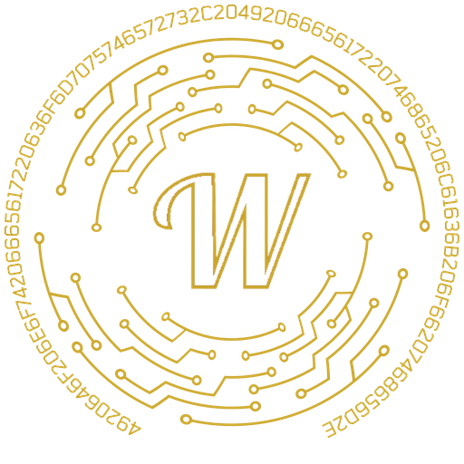

§ 01 · Select a pathway

West CTA Cybersecurity
Two pathways into offensive and defensive computing — the CTE curriculum that trains operators, and the competition team that ships them to nationals.
Scroll to descend
Pick a path
Both start in the same place. One is on your schedule, the other is on your own time.